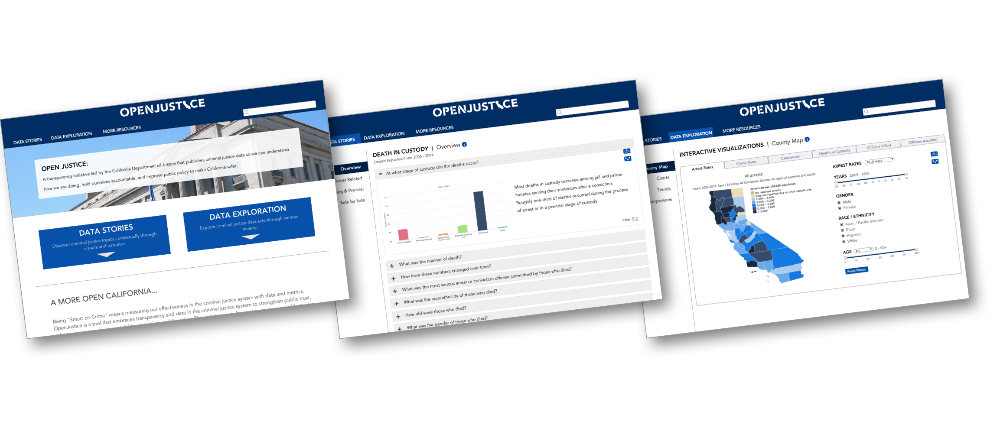

Research
In two and a half short weeks were were able to speak to 23 individuals regarding OpenJustice (11 laypeople, 6 data scientists, 4 journalists, and 2 members of law enforcement). Usability testing and user interviews were vital for us in determining the major flaws in the current site. It became abundantly clear that the use of jargon, inconsistent navigation, unclear filtering and an overwhelming amount of copy made the site very confusing.
“It seems like the site tries to cater to everyone at once, but is unsuccessful at both ends” (Karen, Journalist)
The next step was to develop personas in order to guide our design decisions and help narrate the story to the client. The three personas were all based on our research and show the different types of users that may frequent the site (see personas here).
Strategy
Following the research phase, we began brainstorming the optimal ways to restructure the primary and secondary site navigation. The actual content on the site was excellent; we just needed to come up with a way to let specific users find the data sets (and their accompanying features) in an easy and efficient way. The before and after site maps can be viewed here.
We approached the redesign by focusing on:
• Clarifying and streamlining: To some extent, all users got lost or confused while using the site. By making navigation consistent and minimal we made it much easier for a user to understand where they are in the site and exactly what page they’re looking at. By recommending the removal of jargon words (or the ability to hover-define them) we dealt with the issues of terminology confusion. Finally, by paring down overwhelming copy we allowed the users to get to what they were looking for immediately.
• Accounting for future growth: OpenJustice is a relatively new site and the stakeholders were very excited at the prospect of building it out and adding various features in the future. Our design accounts for this by splitting up the current pages into two main categories, allowing for nesting in the future or the addition of a third and fourth category as needed.
• Visually relaying the message: Compared to other government websites, OpenJustice is clean and minimal in its visual design. However, users did note on some glaring inconsistencies in brand. I approached the visual redesign with OpenJustice’s message in mind: a modern, user-centered approach to data visualization that still retains the authority and credibility of a government website.
Ideation
We wanted the user interface to reflect our recommendations, so we kept the design modern, straightforward, and clean. We started by collaborating on paper sketches and then I moved on to wireframes.
Our redesign focused on the three primary sections of the site:
• Home Page / Global Navigation: The updated homepage features two main options for exploring the site's content. The global navigation is pared down to reflect the hierarchy of the site by incorporating nested contents.
• Data Stories: Data Stories is where users can explore data visualizations alongside curated content to give the statistics contextual relevance. We restructured the layout of each page to immediately display all of the available sections (as opposed to having to scroll without an index). We also recommended that large chunks of copy be nested so as not overwhelm the user.
• Data Exploration: Data Exploration is where power users can dig deep to find specific data points. We recommended that the filters be open and visible at all time. The site initially had dropdown menus for each filter option and no way to see what was filtered after the dropdown closed. We applied design best practices in order to recommend the most appropriate types of filters (sliders, checkboxes, dropdown menus) to make searching for specific data as intuitive and simple as possible.

We wrapped up the project by adding a visual design layer to highlight the new clean and approachable design. At the end of our two and a half week sprint we presented our findings and recommendations to the client and handed off the deliverables.